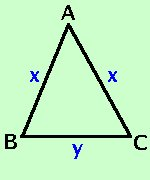

|
Il perimetro di un triangolo isoscele e' m. 58 e il lato supera di 4 il doppio della base. Determinare la misura dei lati e della base  Come prima cosa costruiamo la figura La prima relazione dice che il perimetro e' 58m AB _+ BC _+ AC _= 58 La seconda relazione dice il lato supera di 4 il doppio della base sviluppo AB _ = 4 + 2BC _ Devo trovare la misura dei lati e della base , quindi AB _ = AC _ = x BC _ = y sostituisco nella prima relazione x + y + x = 58 Avendo sostituito le incognite tralascio di riportare la m di metro per semplicita' sommo ed ottengo 2x + y = 58 sostituisco nella seconda relazione x = 4 + 2y Metto a sistema le due relazioni x = 4 + 2y sostituisco il valore della x della seconda equazione nella prima equazione x = 4 + 2y moltiplico x = 4 + 2y sommo le y e porto 8 dopo l'uguale x = 4 + 2y x = 4 + 2y nella prima equazione divido entrambe i termini per 5 x = 4 + 2y Sostituisco il valore della y che ho trovato, nella seconda equazione x = 4 + 2 · 10 = 4 + 20 = 24 Ordino y = 10 Quindi: AB _ = AC _ = x = 24 m BC _ = y = 10 m |